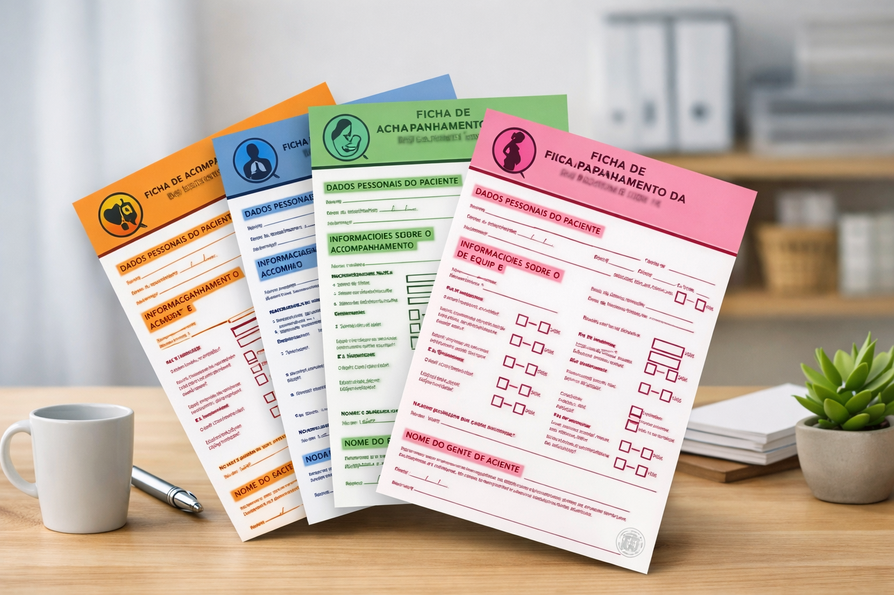

Kit Operacional ACS
Pra quem quer não esquecer nada na visita.
- Pronto pra imprimir e levar pro campo
- Organiza VD, retornos e metas numa folha
Dica: se você esquece pergunta, volta na casa ou trava na visita — é aqui.
Duas ferramentas. Uma escolha. Sem enrolação.
Escolha pelo seu “evitar” de hoje e vá direto.

Pra quem quer não esquecer nada na visita.

Pra quem quer não perder ponto por regra invisível.
Só pra você não travar na escolha.
Se o problema é organização da execução (VD, retorno, controle no papel), vai de Kit. Se o problema é regra (janela, validação, vínculo, o que conta), vai de APS 360.
Não. O Kit é contingência e organização no território. Você lança no sistema quando estiver disponível — com menos risco de esquecer.